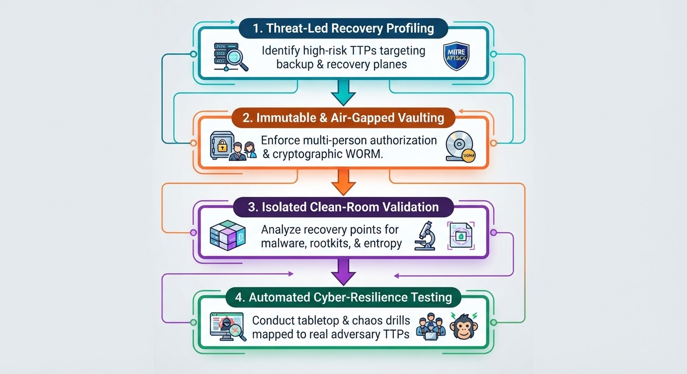

July 22, 2026
20 min read
Beyond the Perimeter: Mapping the MITRE ATT&CK Framework to Enterprise Cyber-Recovery
Traditional disaster recovery (DR) was built for a predictable world: power outages, storage controller failures, floods, and fiber cuts. In that paradigm, recovery was a simple matter of math—Recovery Point Objectives (RPO) and Recovery Time Objectives (RTO)—under the comforting assumption that your secondary site, backup copies, and catalog servers were pristine and uncompromised.
Modern ransomware and advanced persistent threats (APTs) shattered that assumption. Today’s threat actors do not just encrypt data; they actively target your ability to recover. They infiltrate backup repositories, compromise orchestration servers, tamper with volume snapshots, and dwell quietly inside Active Directory for months before executing an attack.
To build a resilient enterprise, resilience architects must shift from reactive recovery to adversary-informed cyber-recovery. By mapping the MITRE ATT&CK (Adversarial Tactics, Techniques, and Common Knowledge) framework directly into your disaster recovery architecture, you can transition from hoping your backups work to mathematically proving they will survive an active breach.
1. Why Traditional DR Fails Against Modern TTPs
When an incident response team invokes a standard DR playbook during a sophisticated cyberattack, they frequently run into a brick wall because the recovery mechanisms themselves have been compromised. Adversaries study enterprise infrastructure architectures and design their campaigns to neutralize traditional recovery levers.
Consider how standard disaster recovery components map directly to the adversary kill chain:
⚬ The Backup Catalog: If an attacker gains Domain Admin credentials, they can manipulate or purge backup catalogs, rendering immutable deduplication appliances invisible or unrestoreable.
⚬ The Orchestration Engine: Automated failover scripts and orchestration tools (such as Zerto, Veeam, or VMware SRM) rely on service accounts. If those accounts are compromised during the lateral movement phase, the failover plane becomes an attack vector.
⚬ The Golden Image / Templates: Pre-configured VM templates and golden ISOs stored in shared repositories are prime targets for supply-chain style tampering prior to payload deployment.
To combat this, cyber-recovery engineering must analyze the enterprise through the lens of MITRE ATT&CK tactics, treating recovery architecture not as an isolated insurance policy, but as the final, highly hardened tier of an end-to-end security posture.
2. Mapping MITRE ATT&CK Tactics to Cyber-Recovery Controls
The MITRE ATT&CK Enterprise Matrix outlines adversary behavior across distinct phases. By examining critical phases through a recovery engineering framework, we can build targeted technical controls that protect our ability to restore operations.
Phase A:
Persistence and Defense Evasion (Pre-Attack Dwell)
⚬ MITRE Techniques: Account Manipulation (T1098), Indicator Removal on Host (T1070), Hide Artifacts (T1564).
⚬ The Threat: Adversaries create shadow administrator accounts, modify Group Policy Objects (GPOs), and alter backup retention policies so that restore points silently age out or self-delete.
⚬ The Cyber-Recovery Control:
⚬ Out-of-Band Immutable Vaulting: Implement write-once-read-many (WORM) storage architecture governed by strict logical air-gaps or multi-person authorization (MPA) workflows. No single administrative token—even root or enterprise admin—should have the unilateral capability to delete policy-locked recovery points.
⚬ Configuration Drift & State Integrity Monitoring: Run automated integrity checks on backup appliance configurations to flag unauthorized adjustments to retention schedules or deduplication policies instantly.
Phase B:
Impact and Data Destruction
⚬ MITRE Techniques: Data Destruction (T1485), Data Encrypted for Impact (T1486), Inhibit System Recovery (T1490).
⚬ The Threat: This is the core cyber-attack vector: mass encryption of production data paired with the deletion of local volume shadow copies (vssadmin delete shadows /all /quiet), hypervisor datastores, and backup repository mounts.
⚬ The Cyber-Recovery Control:
⚬ Isolated Recovery Environments (IRE): Build a dedicated, segmented clean room environment where data can be ingested, scanned, and validated completely isolated from the production network.
⚬ Automated Clean-Room Orchestration: Design recovery workflows that execute automated malware scanning, entropy checks, and file-integrity validation before a single virtual machine or database is re-attached to production networks.
3. Architecting an Adversary-Informed Cyber-Recovery Strategy
Integrating MITRE ATT&CK into your disaster recovery blueprint requires a systematic architectural shift across four core pillars:

Pillar 1: Threat-Led Recovery Profiling
Do not design recovery SLAs based solely on hardware failure metrics. Map your recovery tiers against the threat groups or ransomware strains most prevalent in your industry. If your threat profile indicates sophisticated threat actors who target Active Directory and backup services first, your recovery engineering must prioritize an accelerated, clean-room forest recovery workflow over simple application-level failovers.
Pillar 2: Immutable and Multi-Person Authorized Vaults
Standard backups do not equal cyber-recovery. To defeat techniques designed to inhibit system recovery:
⚬ Enforce logical or physical air-gapping where the vault infrastructure remains entirely unroutable from the primary production domain.
⚬ Require Dual-Control / Multi-Person Authorization (MPA) for any administrative action that modifies encryption keys, retention periods, or deletion policies.
Pillar 3: Clean-Room Validation and Analytics
Restoring data blindly into a clean production environment is a recipe for reinfection. Your cyber-recovery architecture must incorporate an automated validation pipeline:
1.
Ingestion: Pull restore points into an isolated, non-routable clean room (IRE).
2.
Behavioral Scanning: Execute deep-packet inspection, static file analysis, and entropy scoring to detect dormant ransomware payloads or encrypted file headers.
3.
Identity Restoration Verification: Validate that Active Directory and identity provider databases are restored free of persistence mechanisms, rogue service principals, or backdoored admin accounts.
Pillar 4: Adversary-Informed Tabletop Exercises
Traditional DR tests evaluate whether infrastructure scripts run successfully. Cyber-recovery tests must evaluate how human teams respond when systems are untrustworthy. Conduct tabletop simulations and technical chaos engineering drills that directly incorporate MITRE ATT&CK scenarios—such as simulating an adversary who has compromised domain controllers prior to triggering secondary site failover.
Summary:
Shifting from Recovery to Resilience
The evolution from traditional disaster recovery to cyber-recovery is fundamentally a shift from operational continuity to adversarial defense. By anchoring your recovery framework in the MITRE ATT&CK taxonomy, you ensure that your organization doesn't just have a plan to recover from a power outage—it has a hardened, validated, and mathematically sound strategy to survive the most sophisticated cyber attacks.